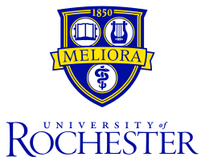

Conley Ernst - Computer Science & Digital Media Studies

General Information
I am a Junior at the University of Rochester double majoring in Computer Science and Digital Media Studies, which provides the unique intersection of engineering and creative arts. Studying to be a software engineer, my academic and professional experience has given me a strong understanding of both the technical and user experience sides of a product.
Academic Experience
My academic career has had an interesting change of pace. I came in as a freshman with the intent of majoring in Digital Media Studies and Environmental Science. As a result, I spent my freshman year taking mainly Biology and Chemistry courses. The spring semester of my freshman year I took CSC 161 in order to fulfill a Digital Media Studies Requirement; this was my first introduction programming. Though I went in with the attitude that I was going to hate it, I ended up falling in love with programming and ended up switching my second major to Computer Science. I have since taken fundamental courses like Computation and Formal Systems in addition to courses like Mobile App Development and Web Programming. One of my favorite courses in Computer Science so far has been Video Game Design where I had the opportunity to apply my computer science skills to a new passion. Outside of computer science, I find myself drawn to art courses in order to complete my Digital Media Studies degree. One of my favorite courses has been New Media and Emerging Practices, were I got to continue my exploration of digital art. I have always had a passion for digital art and design, and am always looking for new was to combine this passion with my love for computer science.
Work Experience
During my short career as a computer scientist I have worked at two different startups: Shareaholic and Drift. Both of the Boston based companies develop web applications. Shareaholic main product is a toolbar widget that different websites can install which allow there visitors to share their content on their social media. This one-click model can share to a variety of social media sites, catering to all different parts of the world. My time spent at Shareaholic was as a “Publisher Support Analyst”– which mainly functioned in the customer support role. I had the unique opportunity to solve problems, optimize the support process of the company, communicate directly with clients, as well as get my hands on some data analytics and advertising. Drift is a messaging application for sales and marketing. Instead of the traditional nurturing cycle of leads, Drift uses AI to instant qualifies and routes leads the the appropriate sales representative or automatically communicates with the customer. While at Drift I worked as a “Customer Advocate” working as a bridge between Support and Product teams. I had the opportunity to not only work directly with customers and engineers, but also to tackle independent projects and take ownership of the company’s “triage” process. I hope to work as a software engineer this upcoming summer and continue my professional development.